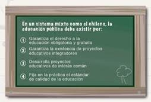
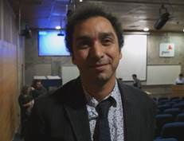
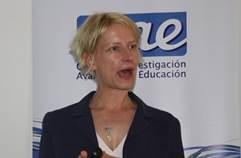

| |
|
Enero 2016 - N° 44
EDUCACIÓN PÚBLICA:
EVIDENCIA SOBRE SU ESTADO Y DESAFÍOS
Garantizar el derecho a la educación obligatoria y gratuita y la existencia de proyectos educativos integradores. Esos son algunos de los fundamentos de la educación pública. El CIAE presenta un compendio con la evidencia generada sobre el tema, con el objetivo de alimentar el debate.
|
AGENDA
► 19 de enero: Seminario “Los desafíos de la Educación Superior Pública en el Siglo XXI”
►21 de enero: Seminario "Neurophenomenology: Building a science of experience"
► 25 y 26 de enero: Seminario Internacional Educacion, Sociedad Y Derechos Humanos: El Aporte De Neurociencia
► 31 de marzo: Vence plazo para concurso internacional de postdoctorado
|
|  |
¿Qué se entiende por educación pública?
¿Cuál es su estado a nivel internacional?
¿Cómo se explica su rendimiento en pruebas estandarizadas?
¿Qué propuestas existen para revitalizarla?
El presente compendio presenta investigaciones y artículos publicados en revistas nacionales e internacionales desarrollados por nuestros investigadores en el Centro de Investigación Avanzada en Educación.
|
| NOTICIAS |
|
|  |
Stephan Vincent-Lancrin (OECD): “Lo fundamental es reformar y en eso Chile está cumpliendo”
VER MÁS
Stephan Vincent-Lancrin, analista senior en el Centro para la Investi- gación e Innovación Educacional de la OCDE y responsable del proyecto para el futuro de la Educación Superior, visitó el país invitado el CIAE y MMC Consultores, en el marco del proyecto Podemos Innovar. “Innovación es el diseño de nuevos productos, procesos, pedagogías, organizaciones y maneras de relacionarse para obtener un resultado significativamente mejor que el anterior”, dice. |
|
Crean Centro Chileno para la Excelencia en Liderazgo Educativo
Instalar y fortalecer las capacidades de liderazgo en el sistema escolar de manera de potenciar el aporte que los directivos puedan hacer a la mejora escolar y a su sostenibilidad en el tiempo. Ese es el objetivo del Centro Chileno para la Excelencia en el Liderazgo Educativo, creado por la U. Católi- ca de Valparaíso, con las universidades de Chile y de Concepción, la Funda- ción Chile y el Instituto de Estudios Educacionales de Ontario. |
|  |
Kate Cain, U. de Lancaster: Las claves de la comprensión lector
En el proceso de extraer el significado de un texto, es decir, de la com- prensión lectora, intervienen múltiples factores. Por eso la comprensión lectora no es sólo el resultado de la decodificación, sino que del reconoci- miento de palabras y de la comprensión oral. Así lo planteó la directora de la Escuela de Psicología de la U. de Lancaster, Kate Cain,
quien dictó una charla invitada por el CIAE.
|
|
Si usted desea dejar de recibir nuestros correos, cancele s
|
|